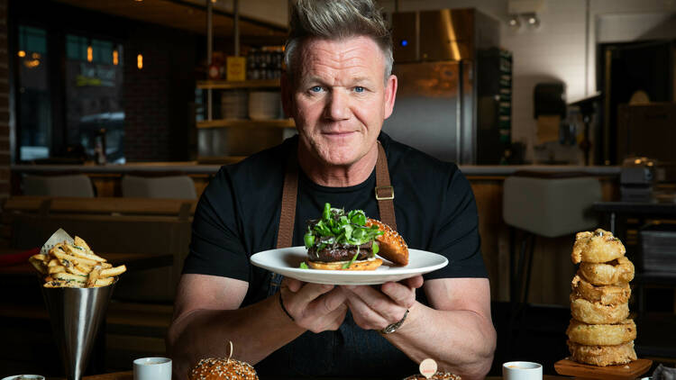

A Collection of Recipes from Gordon Ramsay

Photograph: Gordon Ramsay North America
Roast Beef with Caramelised Onion Gravy Recipe
Sheet Pan Focaccia Pizza with Crushed San Marzanos & Mozzarella
Melted Brie Toast with Macerated Berries
#Source:
https://www.gordonramsay.com/